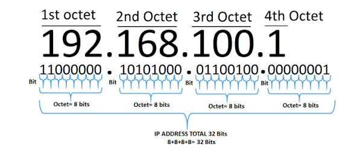

Struttura degli indirizzi IP
Nelle reti TCP/IP a ogni host deve essere assegnato l’indirizzo IP; quest’ultimo, composto da 32 bit (4 byte), viene espresso scrivendo i valori decimali
di ciascun byte da 0 a 255, separati dal carattere punto (rappresentazione dotted-decimal).Un esempio di indirizzo IP è il seguente:

N.B.
Utilizzando 32 bit il numero massimo teorico di indirizzi è
dato da 2 32 = 4.294.967.296 Possiamo osservare come questo
numero sia relativamente basso, in quanto è impensabile
che al mondo siano con-nessi “solo” poco più di 4 miliardi
di calcolatori. Inoltre, come vedremo, non tutti gli indirizzi
possono essere utilizzati, e quindi il numero risulta
ancora più esiguo. Ricordiamo infine che non sono i nodi
ad avere un indirizzo IP, bensì le interfacce: quindi se
un nodo (per esempio un router) ha tre interfacce, esso
è dotato di tre indirizzi IP.
Per poter connettere il maggior numero di calcolatori utilizzando
“solo” 32 bit sono state introdotte alcune tecniche particolari,
che analizziamo di seguito.
Per prima cosa si è “spezzato in due parti” l’indirizzo IP:
- indirizzo di rete (Net-ID o Network-ID);
- indirizzo dell’host (Host-ID)
Per prima cosa si è “spezzato in due parti” l’indirizzo IP:
- indirizzo di rete (Net-ID o Network-ID);
- indirizzo dell’host (Host-ID)
Poi dipende anche dalla subnet mask che vedremo più avanti
 Indietro
Indietro